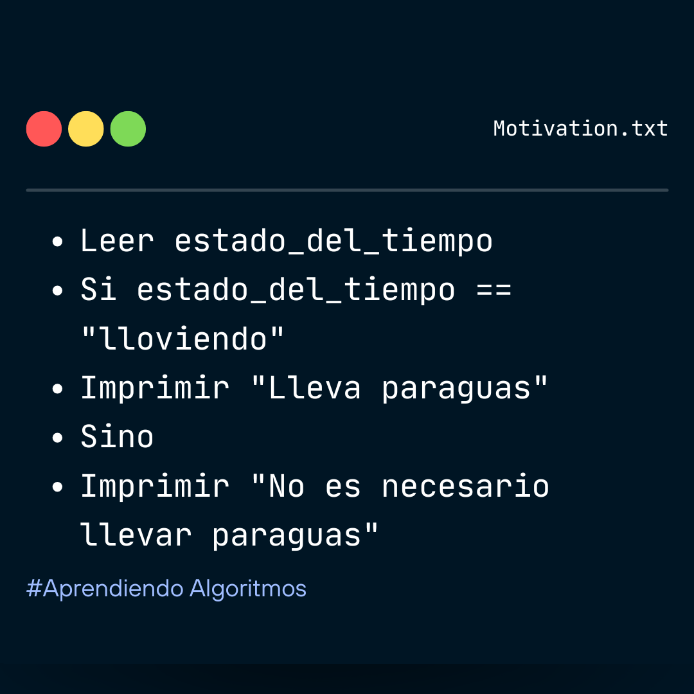
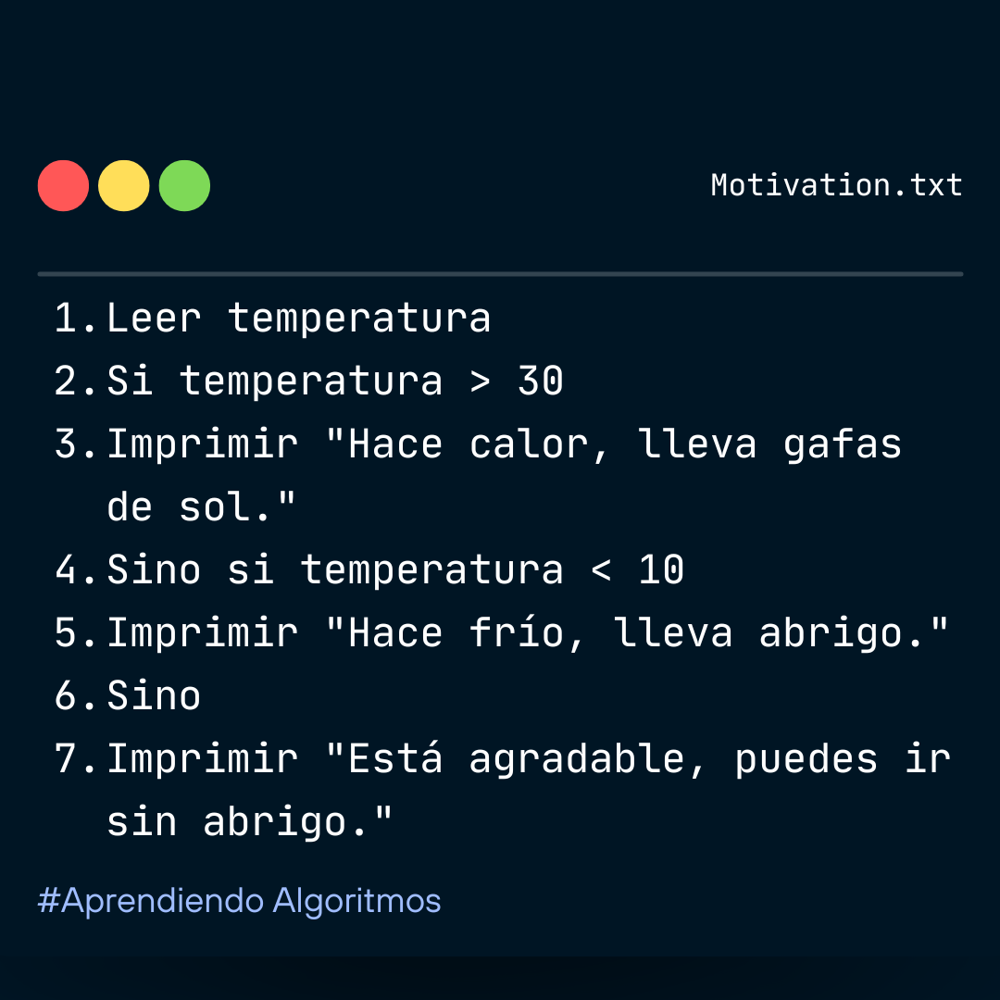
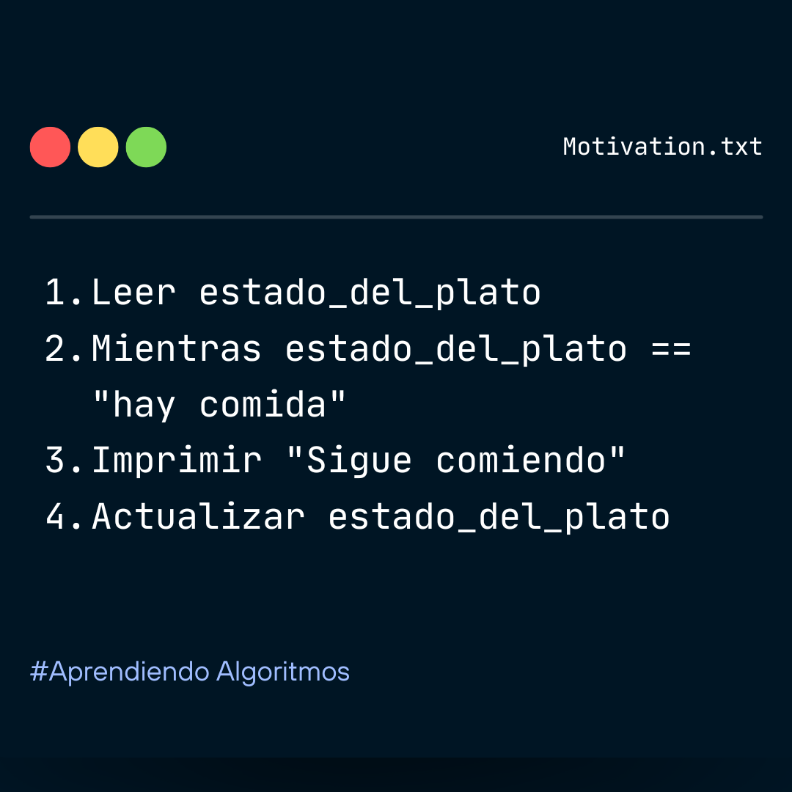
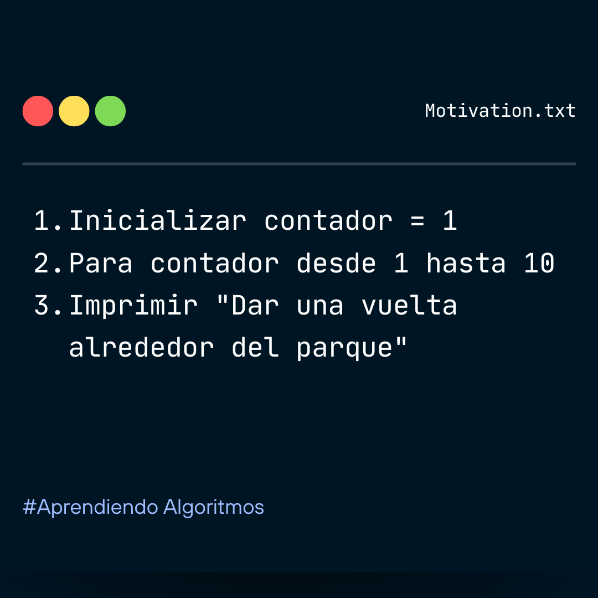
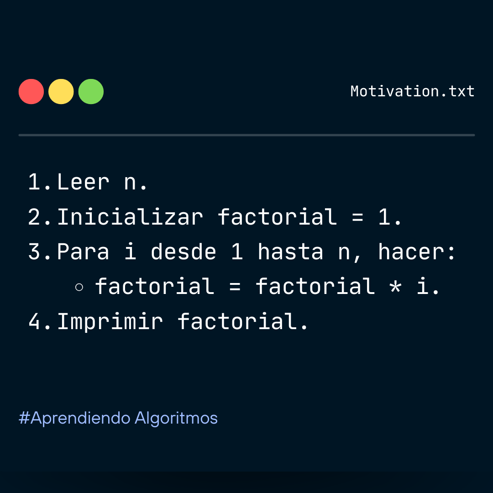
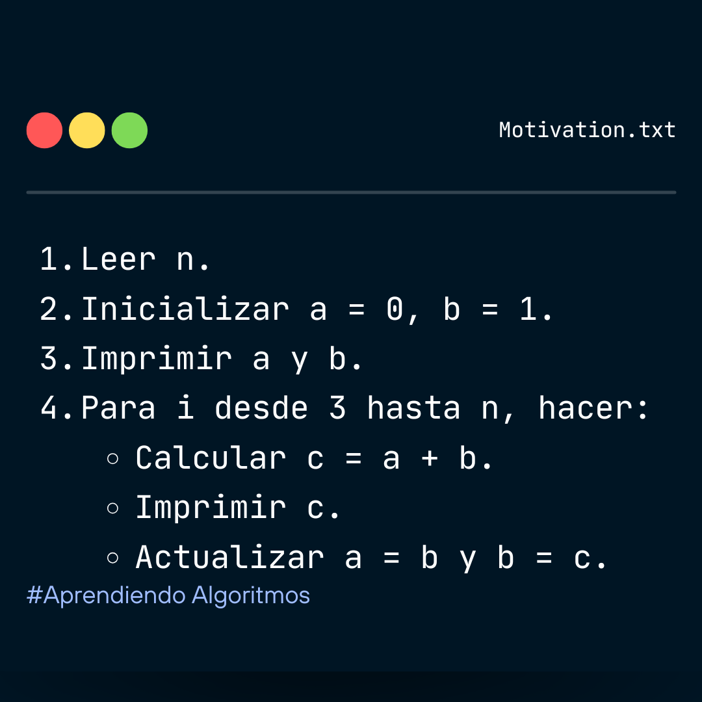
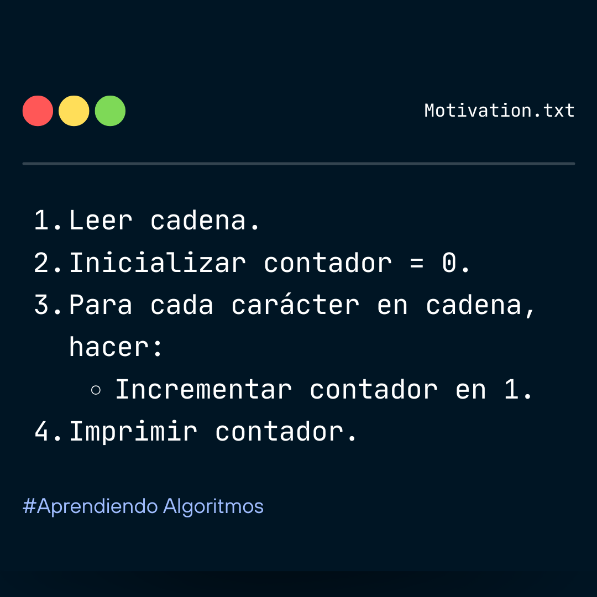
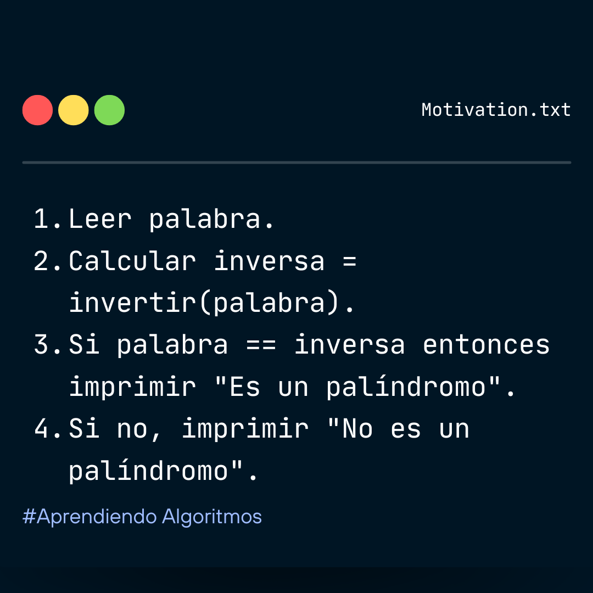
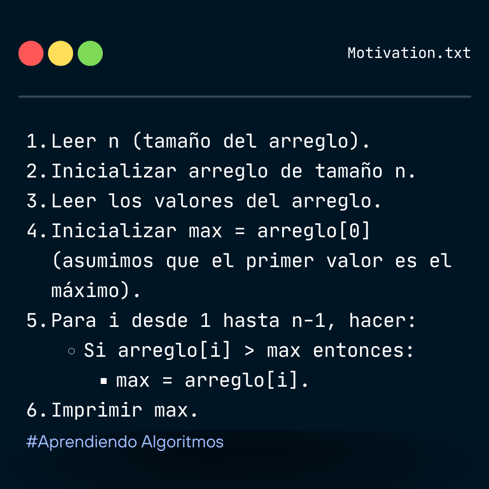

Starter Page
Conceptos Básicos
Así como sigues pasos en una receta o los pasos de la vida diaria, un algoritmo son los pasos que una computadora sigue para resolver un problema.
Un algoritmo necesita instrucciones claras y fáciles de seguir, como cuando te dicen: “Primero haces esto, luego haces aquello”.
Operaciones Básicas
Los algoritmos suelen realizar operaciones simples como leer datos, procesarlos y mostrar resultados, así como también realizar cálculos simples como sumar, restar, multiplicar o dividir
- Lectura de datos: Obtener datos de una fuente, como el usuario o un archivo.
- Escritura de datos: Mostrar resultados al usuario o guardar en un archivo.
- Operaciones aritméticas: Sumar, restar, multiplicar, dividir, calcular el módulo (resto de una división).
- Comparaciones: Igualdad (==), desigualdad (!=), mayor que (>), menor que (<), mayor o igual que (>=), menor o igual que (<=).
Suma de dos numeros
Condicionales
Permiten tomar decisiones dependiendo de ciertas condiciones.
Condicional simple
Condicional compuesta
Sirve para tomar una decisión con una sola condición.
Ejemplo: "Si llueve, entonces lleva paraguas."
Permite tomar decisiones entre varias opciones.
Ejemplo: "Si está lloviendo, lleva paraguas; si hace calor, usa gafas de sol; si hace frío, lleva abrigo."
Ciclos
Sirven para repetir acciones un cierto número de veces.
Ciclo Mientras
Ciclo Para
Repite las acciones mientras se cumpla una condición.
Ejemplo: "Mientras haya comida en el plato, sigue comiendo."
Se usa cuando sabes cuántas veces se debe repetir una acción.
Ejemplo: "Dar 10 vueltas alrededor del parque."
Funciones Matemáticas Básicas
AGREGAR TEXTO EXPLICATIVO
Potencia
Raíz Cuadrada
Logaritmo
Factorial de un número
Serie de Fibonacci
Elevar un número a la potencia de otro.
potencia <- base^exponente
Calcular la raíz cuadrada de un número.
raíz_cuadrada <- sqrt(número)
Calcular el logaritmo de un número en una base específica.
logaritmo <- log(número, base)
El factorial (“n!”) es el producto de todos los números desde 1 hasta “n”.
Calcular el factorial de “n”

La Serie de Fibonacci comienza con 0 y 1; cada término siguiente es la suma de los dos anteriores.
Ejemplo: 0, 1, 1, 2, 3, 5, 8...

Manejo de Cadenas
Para entenderlas mejor, imagina que una cadena es como una fila de letras, donde cada letra tiene una posición.
Contar caracteres en una cadena
Verificar si una palabra es un palíndromo
Este algoritmo cuenta la cantidad de caracteres en una cadena.
Ejemplo: Contar el número de caracteres en una cadena.

Palabra que se lee igual de izquierda a derecha y de derecha a izquierda.
Ejemplo: Determinar si una palabra es un palíndromo.

Arreglos
Un arreglo es como una caja que guarda varios elementos (pueden ser números, palabras o cualquier cosa). Cada elemento está en una posición específica dentro del arreglo.
Los arreglos tienen índices, que son los números que indican la posición de cada elemento.
Los índices empiezan desde el 0. Es decir, el primer elemento está en el índice 0, el segundo en el índice 1, y así sucesivamente.
Valor máximo de un arreglo
Palabra que se lee igual de izquierda a derecha y de derecha a izquierda.
Ejemplo: Buscar el valor máximo en un arreglo

Prueba tus conocimientos sobre algoritmos

Total de respuestas correctas: 0